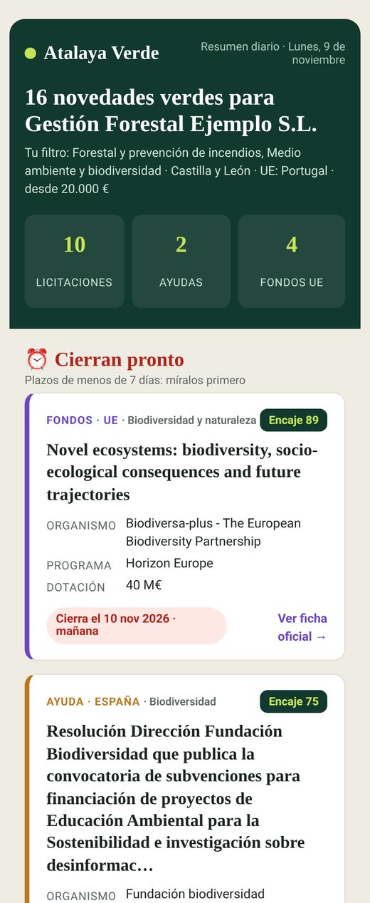
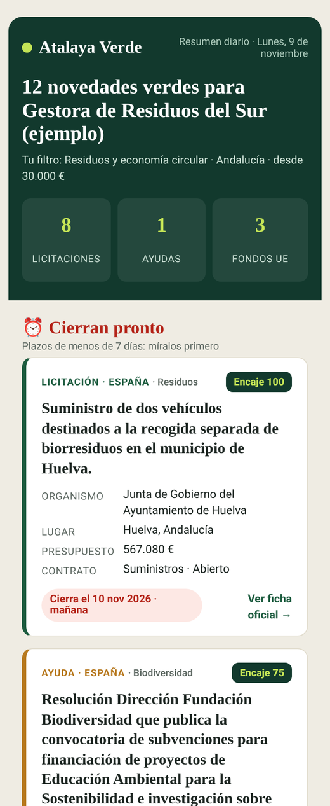

Vigilamos las fuentes oficiales, te mandamos solo lo que encaja con tu empresa y tu zona, y una IA te ayuda a leer el pliego: si puedes presentarte, qué códigos LER pide y qué plazos tiene.
Recogida, tratamiento, puntos limpios, residuos peligrosos y sanitarios.
Trabajos selvícolas, desbroces, prevención y extinción de incendios, viveros y repoblación.
Depuración y servicios medioambientales. No somos un buscador genérico: solo miramos lo tuyo.
Vigilamos por ti las fuentes públicas, puntuamos cada convocatoria según tu perfil y te mandamos solo lo nuevo.
Eliges sectores, comunidades o provincias, países de la UE si te interesan y un importe mínimo. Sin crear contraseñas.
Cada licitación o ayuda recibe una nota de encaje de 0 a 100. Descartamos falsos positivos y lo que ya te enviamos.
Un correo claro, con los plazos que vencen primero arriba y un enlace a la ficha oficial. Diario o semanal.
Datos abiertos oficiales, reutilizados con su licencia y siempre con la fuente citada.
Nota: la energía se cubre con ayudas y fondos; las licitaciones de energía no están incluidas todavía.
Dos correos reales de ejemplo, generados con datos de hoy: una empresa forestal en Castilla y León y una gestora de residuos en Andalucía.


Pega el texto del pliego o usa el que cargamos cuando está disponible. IA incluida, hasta 15 análisis al día (uso razonable).
Aviso: lo genera una IA (Google Gemini). Es orientativo, puede equivocarse y no es asesoramiento legal. Comprueba siempre el pliego oficial.
14 días de prueba gratuita y sin tarjeta. Sin permanencia.
o 190 €/año (dos meses gratis)
o 390 €/año (dos meses gratis)
Cancelas cuando quieras desde el propio correo o escribiéndonos.
No. Reutilizamos datos públicos con su licencia y siempre enlazamos la ficha oficial.
Sí. Te ahorra lectura, pero no sustituye el pliego ni el consejo de un profesional.
Se envía a Google Gemini (API de pago) solo para tu análisis. Más en la política de privacidad.
1. Completa tu perfil de empresa (facturación, certificados y distintivos de flota, códigos LER) y pulsa «Guardar perfil». 2. Copia el texto del pliego (o solo los apartados de solvencia y criterios) y pégalo en el cuadro. 3. Pulsa un agente: Semáforo (¿puedo presentarme?), Borrador memoria técnica, Comprobación LER, Calendario de plazos, Perfiles de socio, Competencia o Detectar códigos LER. Verde = buena pinta, ámbar = revisa lo pendiente, rojo = aún no conviene; mira la lista «Falta revisar antes de presentar». Es orientativo: verifica siempre el pliego oficial. En el panel tienes un botón «Probar con un ejemplo».
No. Confirmas tu correo y desde ahí accedes al panel.
Con el enlace «Darme de baja con un clic» al final de cada correo.
Te enviaremos un correo para confirmar tu dirección. Hasta entonces no recibirás nada.